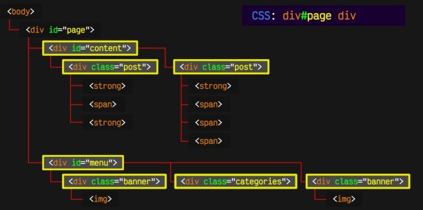
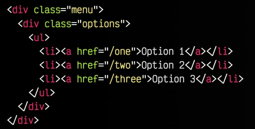
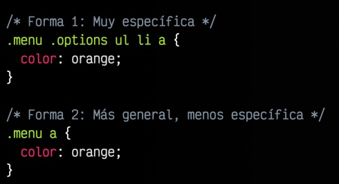
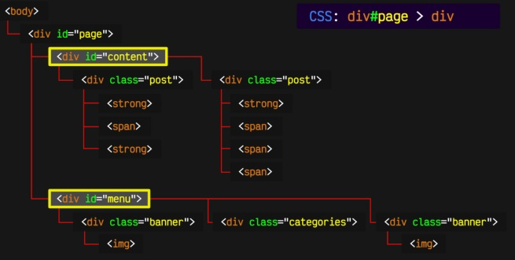
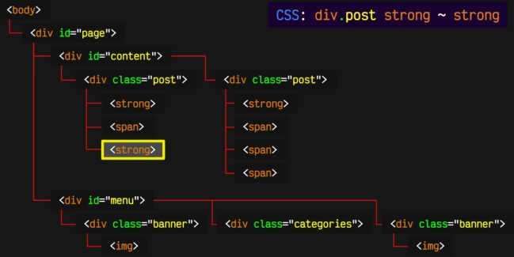
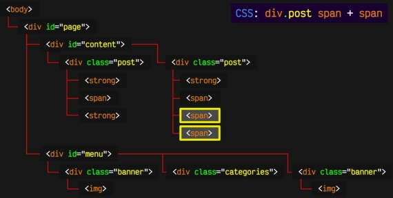
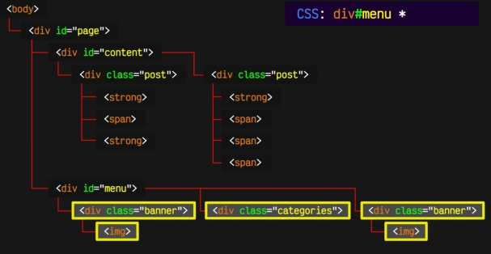

Es la forma de seleccionar ciertos elementos que están dentro de otros elementos. Su sintaxis se basa en colocar los elementos uno a continuación de otro separados por un espacio.
div#page div{
background-color: gold;
}
Selecciona los div que están dentro de div id="page".
En el ejemplo anterior, aplicamos los estilos CSS (color fondo dorado) a todos los elementos div que estén dentro de <div id="page">. Si existe un div fuera del elemento <div id="page"> no se aplicarán los estilos indicados.

Ejemplo de Selector Descendiente
Como vemos en la imágen div#page div selecciona todos los div que contiene dentro, da igual hijo que nieto, es decir, en cualquier nivel de jerarquía.
Se pueden construir selectores muy complejos con tantos elementos descendientes como se quiera, pero una buena práctica es intentar mantenerlos lo más simples posibles.
En el siguiente ejemplo vamos a ver 2 maneras diferentes de seleccionar un mismo elemento:

Código HTML para ejemplo seleccionar descendencia.

Formas de seleccionar descendencia
En ambos casos vamos a seleccionar los a (enlaces).
- En el primer caso va a seleccionar los a, que estén dentro de un li, que a suvez esté dentro de un ul, que a su vez esté dentro de una clase .options y que a su vez esté dentro de una clase .menu y me los pintas de naranja.
- En el segundo caso (más general) seleccionará todos los a que sean descendientes de la clase .menu.
Se recomienda simplicidad.
Selector de hijo (#miid > div)
Un elemento hijo es aquel que cuelga directamente del elemento padre. Solo se seleccionará los hijos directos.
Sintaxis:
#page > div{...}

Selector de Hijo
Ahora en esta imagen vemos como únicamente se han seleccionado los hijos directos de #page.
Selector Hermano (a ~ b)
Un elemento es hermano de otro cuando tiene el mismo padre.
En este caso los li son hermanos. Los a no porque no son hijos del mismo padre, y tanto ul como footer son hijos únicos.
Se pueden seleccionar los hermanos con el selector hermano general, simbolizado con el caracter ~.
a ~ b Selecciona aquellos elementos de tipo b que sean hermanos de elemento de tipo a.

Ejemplo de Selector de hermanos
Esete ejemplo, selecciona aquellos strong que sean hermanos de otro elemento strong que sea descendiente de div.post.
Como vemos no es necesario que el elemento strong se encuentre adyacente al primero, sino que basta con que esté a continuación y sean hermanos en el mismo nivel.
Selector de hermano/s adyacente/s. (a + b)
Este es un selector aún más específico. Un hermano adyacente es una etiqueta que es tu hermana pero está a continuación de ti. Aquellos elementos que están directamente a continuación del elemento especificado. Mediante el símbolo + del selector hermano adyacente se pueden seleccionar aquellos elementos hermanos que están seguidos el uno del otro (en el mismo nivel).
a + b Selecciona los b que son hermanos de a y que están justamente a continuación de a. Ojo a + b selecciona el elemento b, no el a.
Ejemplo sintaxis: div.post span + span{...}

Ejemplo de selector hermano adyacente
Este ejemplo selecciona los elementos span adyacentes que son hermanos de otro span y descienden de div.post.
Selector múltiple (a, b, c)
Va a servir cuando queremos aplicar los mismos estilos a un conjunto de elementos.
Se pueden combinar todos los tipos de selectores que hemos visto.
Selector universal II (*)
Como ya hemos visto más selectores podemos usar * de diferentes maneras. Es como un comodín, cualquier elemento.
div#menu *{...}
Aquí estamos seleccionando cualquier elemento que sea descendiente de div#menu.

Otros usos selector universal
La importancia de un espacio y un punto
Un espacio lo cambia todo.
a .clase Seleccionamos los elementos de la clase .clase descendientes de a
a.clase Seleccionamos los a de la clase .clase
a, .clase Seleccionamos los a y los elementos de la clase .clase
Especificidad
Viendo todo lo anterior nos damos cuenta de todo lo específicos que podemos ser, tenemos descendientes, de hijos, de hermanos, de hermanos adyacentes, etc